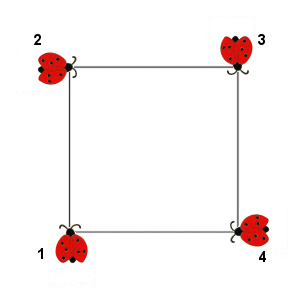

PUZZLE 21: Das Käferproblem

Vier Käfer sitzen in den Ecken eines Quadrates und laufen mit gleicher Geschwindigkeit gleichzeitig los.
Der Käfer 1 läuft auf Käfer 2 zu, Käfer 2 auf Käfer 3, Käfer 3 auf Käfer 4 und der wiederum auf Käfer 1 zu, und
zwar jeweils auf dem kürzesten Weg.
Welches ist die Kurve, auf der sich die Käfer bewegen, wo treffen sie sich und wie lang ist ihr Weg bis zum Treffpunkt?
4. März 2004